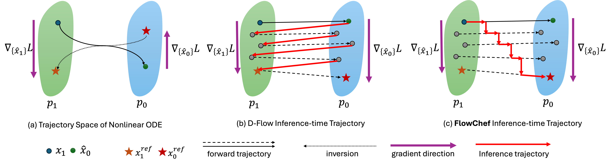

Abstract
Diffusion models (DMs) excel in photorealism, image editing, and solving inverse problems, aided by classifier-free guidance and image inversion techniques. However, rectified flow models (RFMs) remain underexplored for these tasks. Existing DM-based methods often require additional training, lack generalization to pretrained latent models, underperform, and demand significant computational resources due to extensive backpropagation through ODE solvers and inversion processes. In this work, we first develop a theoretical and empirical understanding of the vector field dynamics of RFMs in efficiently guiding the denoising trajectory. Our findings reveal that we can navigate the vector field in a deterministic and gradient-free manner. Utilizing this property, we propose FlowChef, which leverages the vector field to solve controlled image generation tasks by jumping between nearby trajectories until convergence, facilitated by gradient skipping. FlowChef is a unified framework for controlled image generation that, for the first time, simultaneously addresses classifier guidance, linear inverse problems, and image editing without the need for extra training, inversion, or intensive backpropagation. Finally, we perform extensive evaluations and show that FlowChef significantly outperforms baselines in terms of performance, memory, and time requirements, achieving new state-of-the-art results.
Method
A short intro to the method.
Inversion-free Image Editing
Latent Inverse Problems
Relevant Projects
WOUAF
Weight Modulation for User Attribution and Fingerprinting in T2I Models.

ConceptBed
Evaluating Concept Learning Abilities of T2I Models